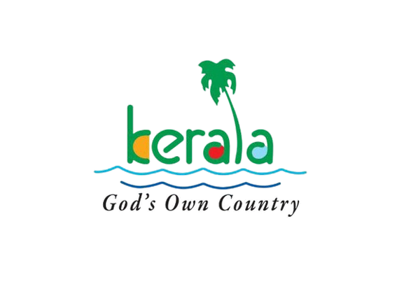

KERALA
REGISTOR
GOD'S OWN COUNTRY
If you’re looking for a Southern getaway in India then Kerala is the perfect choice of destination to plan your escape to and you have landed at the right place
to make this tropical vacation happen! Famously known as the ‘God’s Own Country’, Kerala is the picturesque beauty that is located in the tropical Malabar
Coast of India and here we give you a wide selection of Kerala Blogs, expertly weitten to cater to all your travel needs. You can go as far as you can with your
imagination and find the best of options to make your Kerala trip come true with a lifetime of memories and adventures to look forward to. The backwaters of
Kerala are a perfect place to unwind in the midst of swaying palm trees and spice plantations. Soak in the aroma of coffee and go on an evening stroll exploring
the tropical landscape of Kerala. Find all the information about comfortable homestays or luxurious houseboats on this Kerala trip blog for a blissful vacation in
this souther beauty. With what you'll learn from these Kerala tour blogs you are bound to have a hassle free trip. Also, if you want motivation to traverse the serene
backwaters of this piece of paradise, teh below given write-ups will do the trick for you. Discover hidden gems, go off the beaten track and share your best travel
moments with your friends and family back home!Kerala is always referred to as God’s own country. This term has a mythological belief that states that- Lord Parshuram, a manifestation of Lord Vishnu threw his axe into the vast sea to develop land for his followers to reside peacefully. And that is how the state of Kerala was born from the god itself. Getting birth from the god itself is the reason why Kerala is known as and called as God’s own country.
Kerala is a land where its beauty lies in the lap of nature. All over the state is surrounded by gorgeous and exotic beaches, has numerous breath-taking hill stations, enthralling waterfalls, stunning lagoons, meandering rivers and Amazing natural scenarios. It is heaven on earth. The natural beauty of Kerala gives a wholesome experience of peace and quietude. People go on vacations to these places to get a period free from stress and all the attachments and connections of this materialistic world.
Tourism and Travel
The whole geographical location is filled with different religious institutes like churches, mosques, temples, gurudwaras, etc. Being ruled under a communist political regime, it is one of the most stable states with a minimal number of cases being reported against religious intolerance. Every religion has an equal space and respect for each other’s existence makes it a peaceful place to live in. People of this region abide by the rules and laws as set by the government. This makes the process of political existence and governance execute and run smoothly in the state.
Although Kerala is a hub of tourist places and amazing natural beauties, the beauty of the state remained unseen and unnoticed until the Kerala government launched its first travel and tourism campaigns. Having adopted the tagline as “God’s own country”- which afterwards became a worldwide tag that received much love and acceptance. Kerala has become a popular destination not only for foreigners but also the domestic tourists. The ancient monuments, the nature, have been the best showstoppers and the ones most looked for by the tourists.
Not only do the beaches, mountains, monuments, etc. attract the tourists, it’s the facilities, the nature of the people of Kerala, and their guest treatment is what make a person visit, and again revisit this place.
The tourism body of the state works on an agenda that works in hand whilst promoting the tourism of the state. They aim at promoting ecologically sustained tourism whose main focus is on the local culture, wilderness adventures, volunteering and personal progress of the local population. A balance tends to be maintained between following traditional tourism along with taking care of the natural environment. Enhancement and integrity of culture and people are what the governmental body focuses upon.
Top 10 sights in Kerala
| NO. | DESTINATION | |
|---|---|---|
| 1 | Munnar | Known for its sprawling tea gardens, misty hills, and serene atmosphere, Munnar is a popular hill station in Kerala. |
| 2 | Alappuzha | Often referred to as the Venice of the East, Alleppey is famous for its backwaters, houseboat cruises, and tranquil waterways. |
| 3 | Kochi | As a vibrant port city with a rich history, Kochi offers a blend of cultural heritage, colonial architecture, and modern attractions |
| 4 | Kumarakom | Nestled on the banks of Vembanad Lake, Kumarakom is renowned for its backwater tourism and bird sanctuary. |
| 5 | Thekkady | Home to the Periyar Wildlife Sanctuary, Thekkady is a paradise for nature lovers and wildlife enthusiasts. |
| 6 | Wayanad | With its lush greenery, misty mountains, and cascading waterfalls, Wayanad is a haven for adventure seekers and nature lovers. |
| 7 | Kovalam | Famous for its pristine beaches and shallow waters, Kovalam is a top beach destination in Kerala. |
| 8 | Varkala | Known for its cliff-edged beaches and religious significance, Varkala offers a unique coastal experience. |
| 9 | Athirappilly Waterfalls | Often dubbed as the Niagara of India, Athirappilly Waterfalls is a breathtaking natural wonder located amidst lush green forests. |
| 10 | Poovar | Poovar is a calm village by the sea at the bottom of Kerala. People love it for its boat rides on calm waters, beautiful sandy beaches, and where three waterways meet: the Neyyar River, Arabian Sea, and Poovar Lake. |
DISTRICTS
1.KASARAGOD
2.KANNUR
3.WAYANAD
4.KOZHIKOD
5.MALAPPURAM
6.PALAKKAD

7.THRISSUR